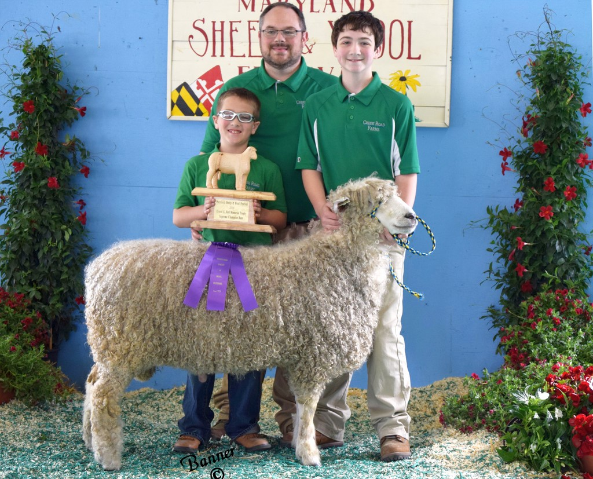

Current Sires
Larson Peculiar

An AI son of Tardebiggie Finbar using semen Brian Larson imported from the UK.
Awards:
- Champion White Lincoln Ram, 2016 Maryland Sheep and Wool Festival
- Best Fleece White Lincoln, 2016 Maryland Sheep and Wool Festival
- Supreme Ram, 2016 Maryland Sheep and Wool Festival
North Valley Farm Phantom
Awards:
- Champion Natural Colored Lincoln Ram, 2017 Maryland Sheep and Wool Festival
- Best Fleece Natural Colored Lincoln, 2017 Maryland Sheep and Wool Festival